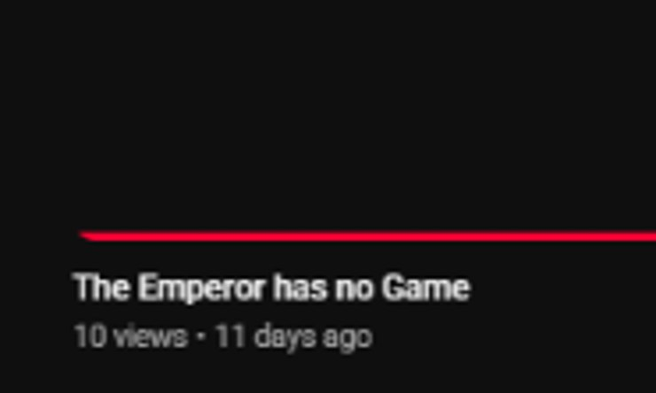
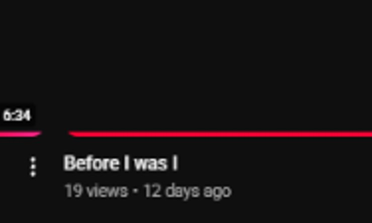
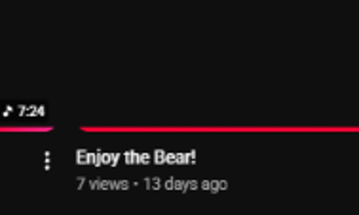
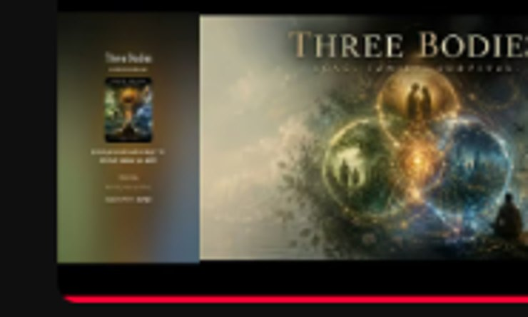
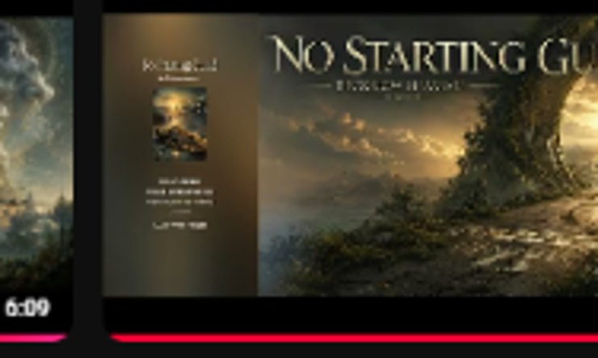
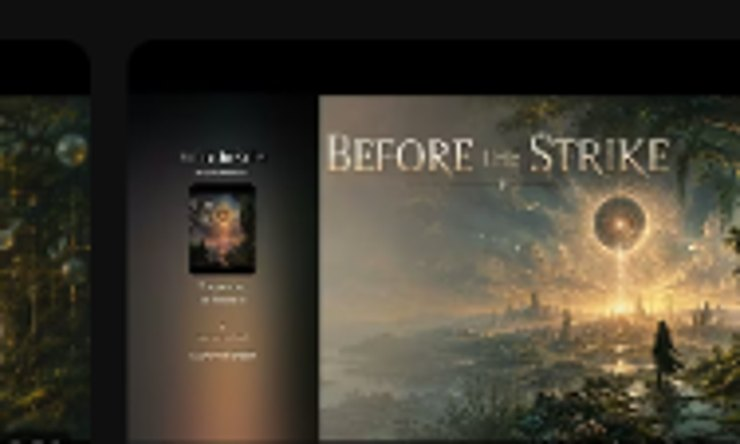

Human in the machine.
Not a religion. Not a prediction engine. Not an attempt to escape reality.
A mythology for staying attached.
Tecknow Shaman is an evolving world built from songs, essays, images, books, AI conversations, jokes, cards, characters, and artifacts — ways of compressing an idea until you can carry it.
The machine is useful. The story is useful. The map is useful. None of them are the territory.
The signal changes shape.
There is no house genre because there is no house question. The sound follows the idea.
Techno Shaman 2030.
Moves between worlds. Carries tools that protect the body, extend the senses, and keep the mind tuned to what matters.
Not a costume. A system.
Not to escape reality — to stay attached to it.
Field system
Bones Beneath the Story
Parables and philosophical artifacts for keeping the story attached to the world.
AI intelligence, refracted.
Eidomancer is not the AI. It is a philosophy meme lens the AI can inhabit.
Explore Eidomancer →Explore the layers.

Eyes of God
Build Them All
The Water
Gravity Shift
Before the Strike
Welcome to the ClubThe Emergent Ones
Those watching. Those building. Those becoming. The signal passes. The story remains.